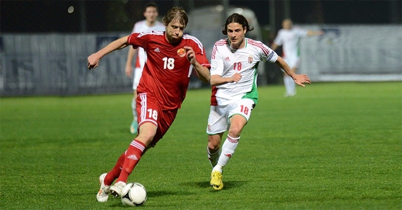

Mi is az a labdarúgás?
A labdarúgás, más néven foci, a világ egyik legnépszerűbb sportágához tartozik. Két csapat versenyez egymással, a cél pedig a labda a másik csapat kapujába történő juttatása. A játékot 11 játékosból álló csapatok játszák, és egy meghatározott időtartamra osztott mérkőzéseken alapul.
A labdarúgás története
A labdarúgás története évszázadokra nyúlik vissza, és számos kultúrában és régióban kialakultak hasonló játékok. A modern labdarúgás szabályait a 19. század közepén alapították meg, és azóta folyamatosan fejlődik.
Képek
3 ismert foci csapat